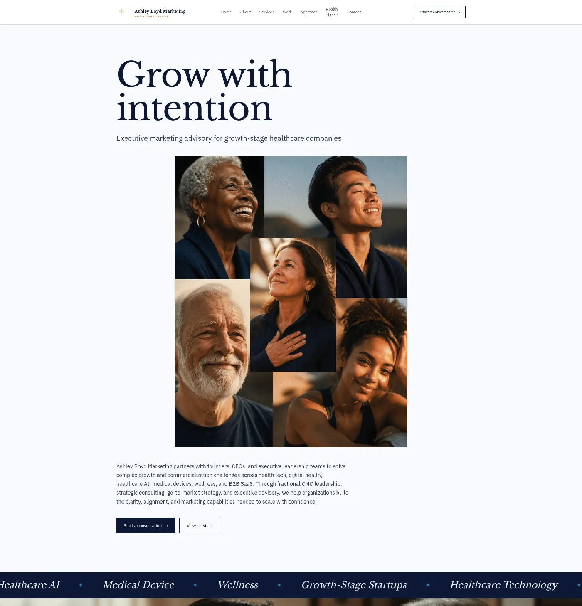
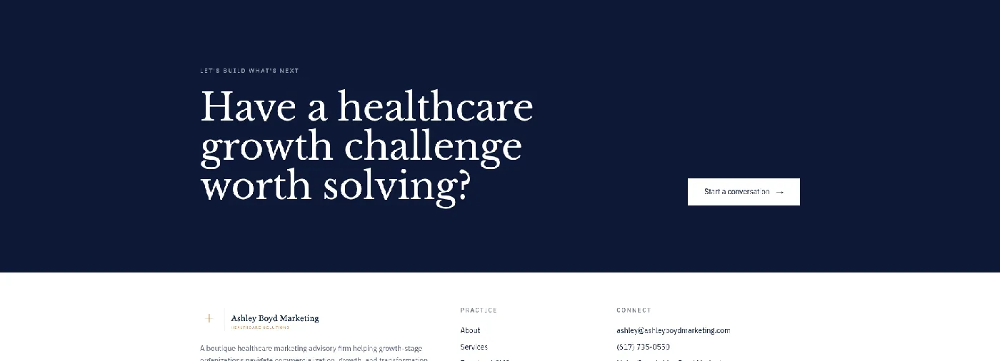
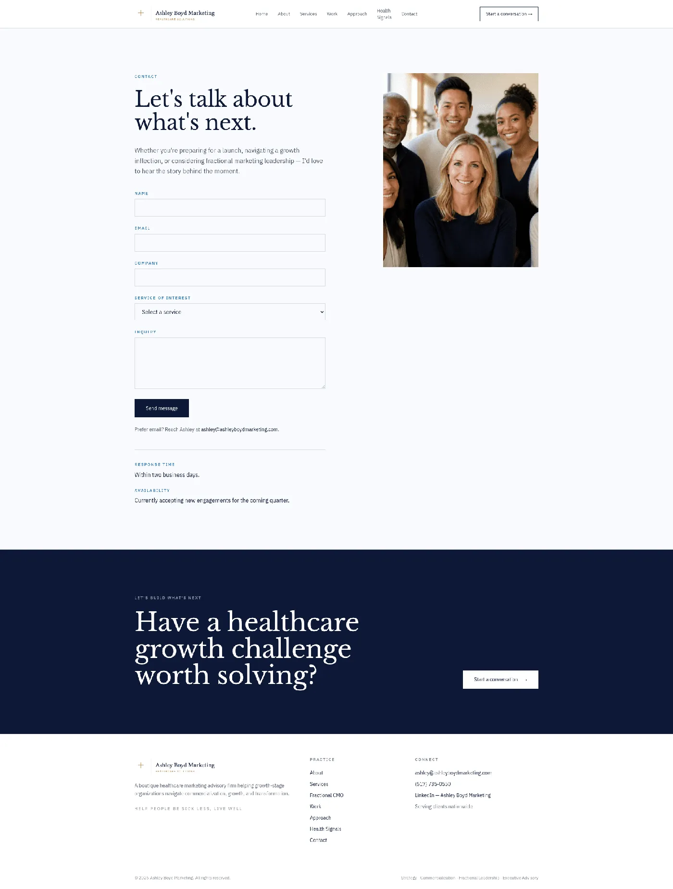

ashleyboydmarketing.com · July 17, 2026
Ashley’s site sells a high-trust, high-price advisory to a skeptical, time-poor buyer — so every point of friction between “interesting” and “start a conversation” is a lost engagement worth tens of thousands a month. In a category where the buyer’s default is “just hire full-time,” a clearer, more proof-dense path to inquiry is the difference between a full pipeline and a quiet inbox. The fixes below are almost all low-effort and sit directly on that path.
Each step a new user moves through to reach activation — and where they hit friction. Scroll to see the full path.
Ashley Boyd Marketing measured against its closest competitors on the dimensions that drive activation. Scroll horizontally to see every column.
| Dimension | Ashley Boyd Marketing | Strategy Collective | Healthy CMO | In-house CMO hire |
|---|---|---|---|---|
| Above-the-fold clarity | Niche clear in subhead; headline generic | Strong, outcome-led | Clear, niche-led | N/A |
| Proof / outcome depth | Named clients, few metrics | Board-ready reporting | Startup case examples | Known internally |
| Engagement-path variety | Single high-intent CTA | Multiple entry points | Content + inquiry | N/A |
| Pricing / model transparency | None shown | Model described | Partial | Fully known |
| Trust / credibility signaling | Strong bio + testimonials | Infra + governance | Founder authority | Highest |
The 5 highest-impact friction points, in the order a user hits them — grouped by page across the flow. Selected from a 14-finding evaluation across 11 UX dimensions. Click any finding to expand it.

The hero leads with “Grow with intention.” The differentiated promise — executive marketing advisory for growth-stage healthcare companies — is the smaller subhead beneath it.
“Grow with intention” could belong to any consultancy. A buyer scanning for five seconds may never register the healthcare niche that is Ashley’s single biggest advantage — so the page fails to qualify the right visitor at the top.
In the hero, the “Start a conversation” and “View services” buttons appear only after a four-image collage and a multi-line paragraph, placing the primary action well down the first screen.
High-intent visitors should be able to act the moment the value proposition lands. Burying the CTA adds interaction cost and loses the visitors who don’t scroll — the exact people most likely to convert.
The homepage, the Services page, and the contact dropdown each list a different set of six service names — they don’t line up across the three surfaces.
A buyer comparing pages can’t tell whether these are the same services or different ones. For a firm that sells positioning and messaging expertise, inconsistent naming quietly undercuts the core credibility claim.

Across the homepage, nearly every call to action is “Start a conversation” → Contact. The only lower-commitment option is reading the Health Signals articles.
Buyers researching a fractional CMO are often months from ready. With no mid- or low-intent path to stay in touch, not-yet-ready visitors leave with no way to re-enter Ashley’s orbit — and a referral-driven practice lives on staying top of mind.

On desktop, the form occupies a narrow left column and a group photo sits top-right, leaving a large empty region below the image and to the right of the form.
The imbalance makes the highest-value page on the site feel unfinished and pulls the eye away from the form rather than toward it — at the exact moment a buyer is deciding to reach out.
An AI-assisted analyst evaluated 11 UX dimensions against a Nielsen Norman Group–grounded framework, with automated performance and SEO checks reviewed for accuracy and business relevance (accessibility flagged for manual review).
Because a founder-led advisory converts scarce, high-intent visitors into a single discovery conversation, this audit weights above-the-fold clarity, credibility, proof depth, and the inquiry path over aesthetic-only concerns.
This preview shows the top 5. The 21-Day Activation Diagnostic takes one high-stakes flow and fixes it end to end — audited, redesigned, and prototyped, ready to ship.
Start the 21-Day Activation Diagnostic